An acoustic journey through 1,000 kilometres of southern Tunisia, revealing 29 species and 1,210 detections in landscapes often dismissed as silent.
Zakher BouragaouiApril 202614 min read
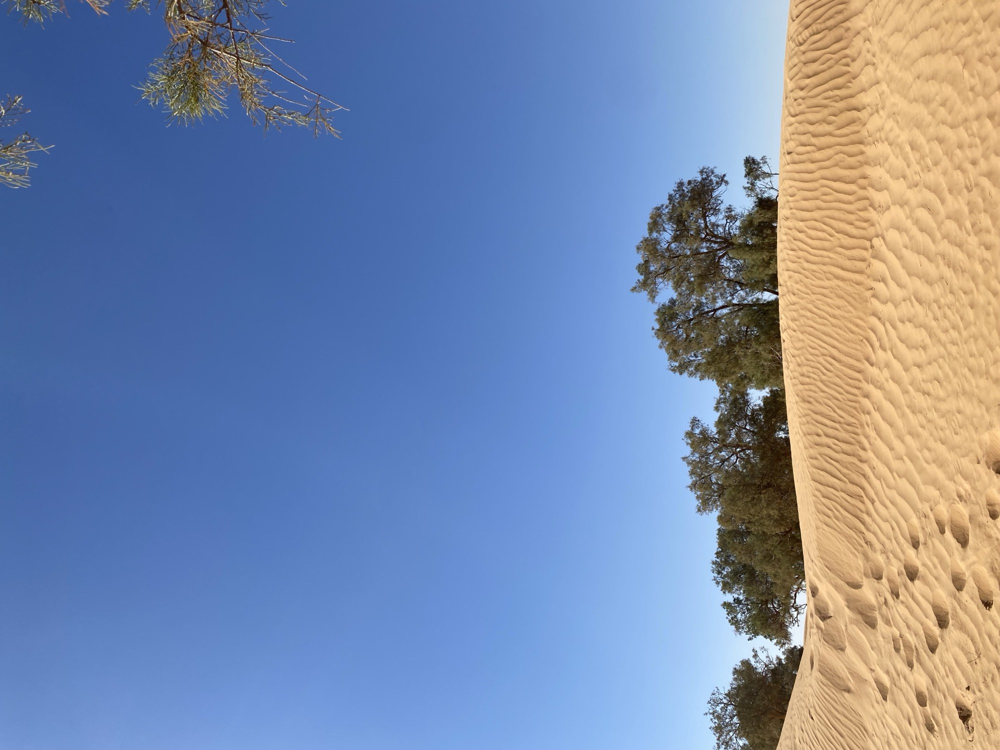
Wind-sculpted sand dunes at the edge of the Grand Erg Oriental.
For two days in April 2026, a thousand kilometres of Tunisian landscape unfolded from Mediterranean transition zones to the deep Sahara. This is not a story of silence. It is a story of 29 species, 1,210 detections, and a desert that refuses to be called empty.
At a glance
29
Species detected
1,210
Total detections
17h
Recording time
0.778
Mean confidence
The Route
From Mediterranean Tunisia to the deep Sahara and back — 1,000 kilometres across eight distinct landscapes.
01
Tunis
36°48′N 9°11′E
Departure point. Mediterranean climate with winter rainfall.
02
Matmata
33°32′N 9°58′E
Troglodyte architecture carved into hillsides.
03
Techine
33°28′N 10°00′E
Settlement at the edge of agricultural viability.
04
Kef el Boum
33°23′N 10°01′E
“Owl Cliff” — toponymy meets ecology.
05 · Primary site
Qsar Ghilen
32°59′N 9°38′E
Permanent oasis. Where all 1,210 detections were recorded.
06
Douz
33°27′N 9°01′E
Gateway to the Grand Erg Oriental.
07
Chott El Fejej
33°59′N 9°07′E
Seasonal wetlands for migratory birds.
08
Bouhedma N.P.
34°23′N 9°26′E
Protected steppe with reintroduced ungulates.
Chapter 01
Tunis: Departure
Every expedition begins somewhere. For this acoustic journey, that place was Tunis — the capital city where Mediterranean influence still holds, where winter rains support agriculture, where the transition to desert has not yet fully begun.
We departed in the early morning, vehicles packed with AudioMoth recorders, GPS units, field notebooks, and the cautious optimism that comes with any research venture.
What we would find at Qsar Ghilen remained uncertain. But the gradient itself was guaranteed — each kilometre south bringing measurable changes in temperature, rainfall, vegetation structure, and the biological communities adapted to these constraints.
Chapter 02
Matmata: Underground Architecture
At Old Matmata, human adaptation to desert extremes takes architectural form. The Berber community here carved homes directly into hillsides — not as novelty, but as necessity.
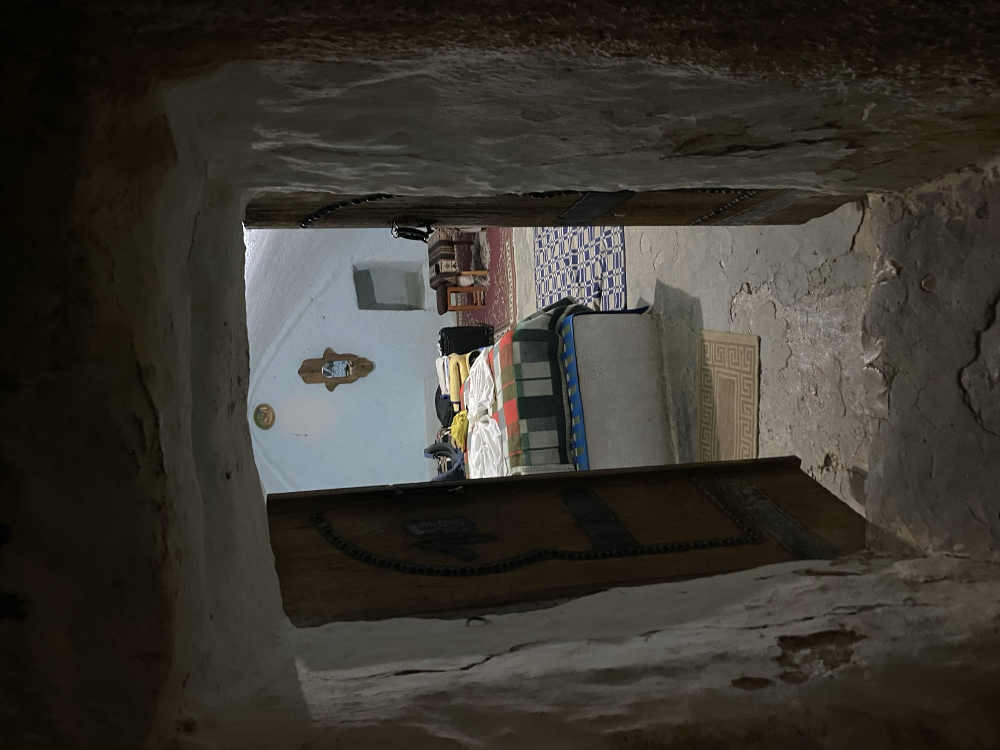
Interior of a traditional troglodyte dwelling. Whitewashed walls and arched doorways demonstrate vernacular subterranean architecture.
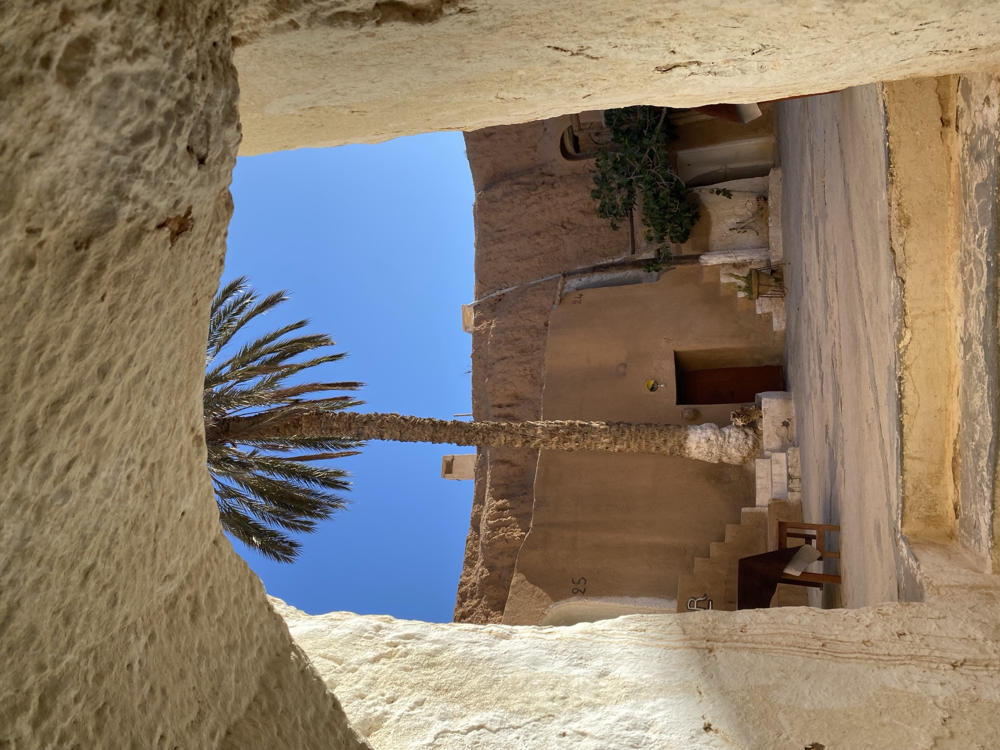
View through a carved window opening.
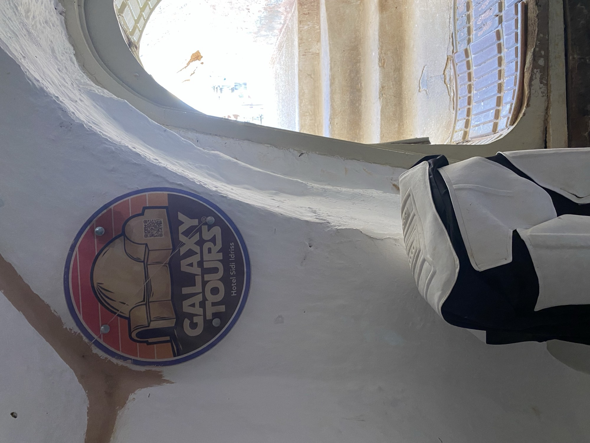
Star Wars filming location marker.
Passive thermal regulation
Underground dwellings maintain stable temperatures year-round — a passive thermal regulation system in a place where ambient conditions can exceed 45 °C in summer. The architecture is sustainable by design, requiring no external energy inputs for climate control.
Cultural heritage meets film tourism
The circular Galaxy Tours sticker marks where Luke Skywalker's homestead stood in the 1977 Star Wars film. Film tourism infrastructure overlays cultural heritage, creating economic opportunities while raising a question: can vernacular knowledge systems survive their transformation into spectacle?
Chapter 03
The Transit Zone
Between cultural landmarks lie the ordinary kilometres — the transit zones that most narratives skip. But landscapes in motion reveal patterns invisible from static observation points.
Techine: settlement patterns
Small settlements punctuate the route south. Each represents a calculation: where can humans persist, given available water, arable land, and connection to larger networks?
Kef el Boum: Owl Cliff
Place names encode ecological knowledge. “Kef el Boum” — Owl Cliff — announces a relationship between topography and avifauna that predates roads and power lines. A raptor perched on a roadside utility pole confirmed the toponym as we passed.
The gradient
The landscape transforms. Vegetation thins. Soil gives way to sand. The horizon extends without interruption. The road to Qsar Ghilen served for decades as Rally Dakar infrastructure.
Chapter 04
Qsar Ghilen: The Acoustic Hotspot
At Qsar Ghilen, the desert speaks loudest. Not because the landscape amplifies sound, but because water concentrates life.
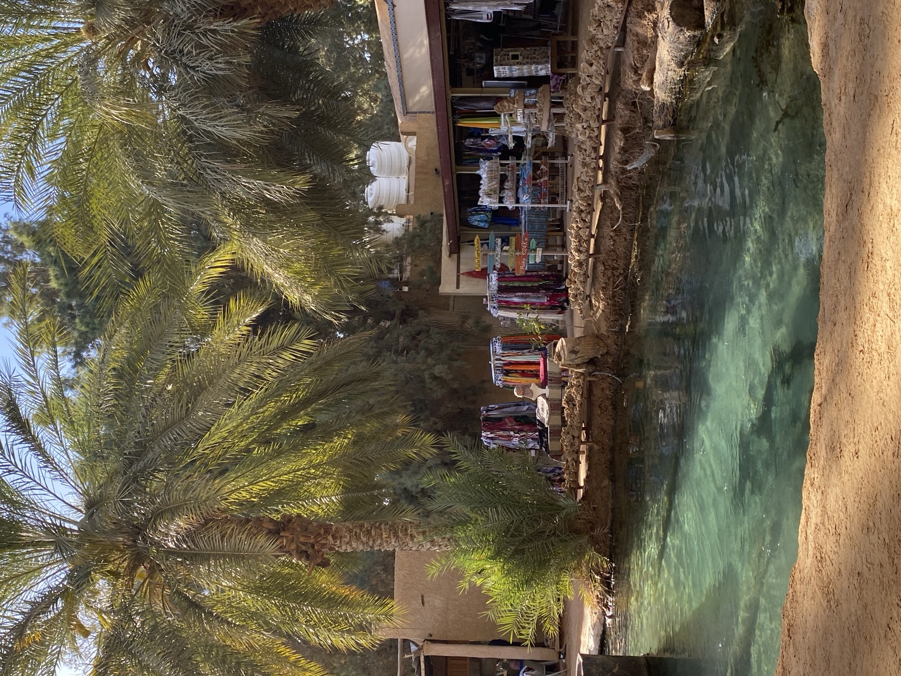
The Qsar Ghilen oasis, showing the permanent water body surrounded by Phoenix dactylifera (date palms).
The oasis hotspot
The oasis functions as a biodiversity hotspot — a concept ecologists use to describe areas with disproportionately high species richness relative to surrounding terrain. Over 17 hours of acoustic monitoring we documented 1,210 detections across 29 species, an assemblage of migrants, residents and opportunistic visitors, with peak activity at dawn (05:00–07:00) and dusk (17:00–19:00).
The acoustic grid
Passive acoustic monitoring inverts traditional field ornithology. Instead of observer presence biasing what gets recorded, autonomous units document soundscapes continuously.
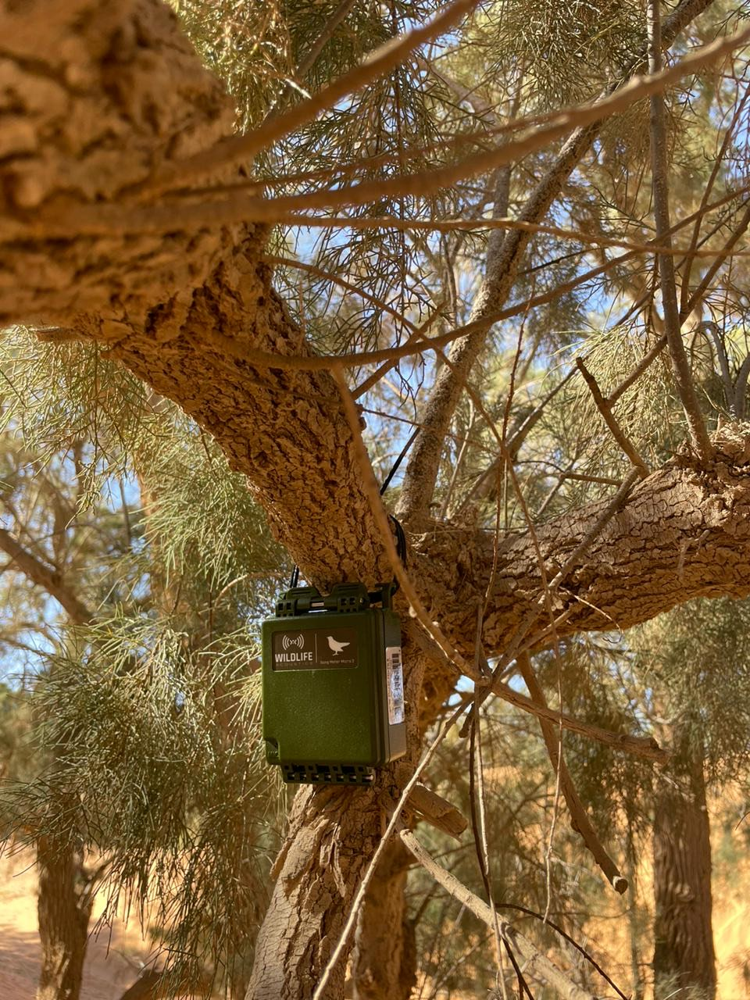
AudioMoth installation on Acacia raddiana.
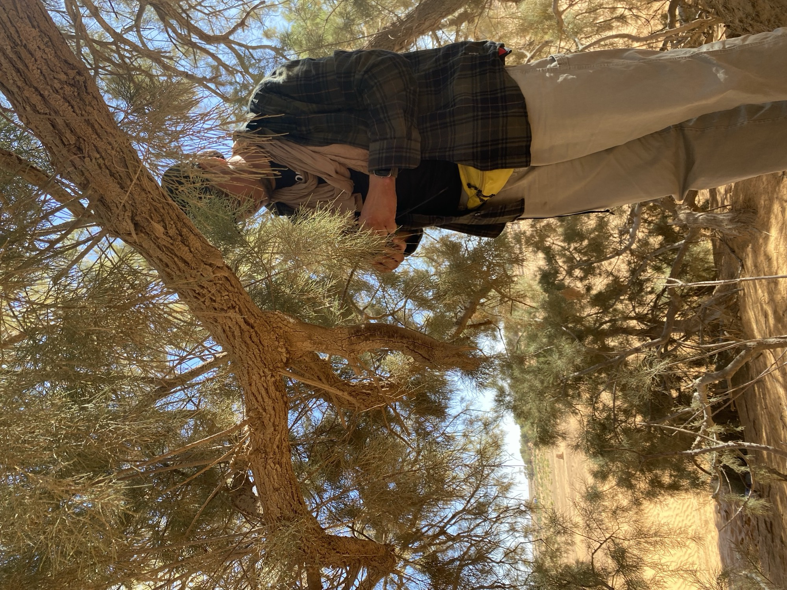
Field deployment configuration.
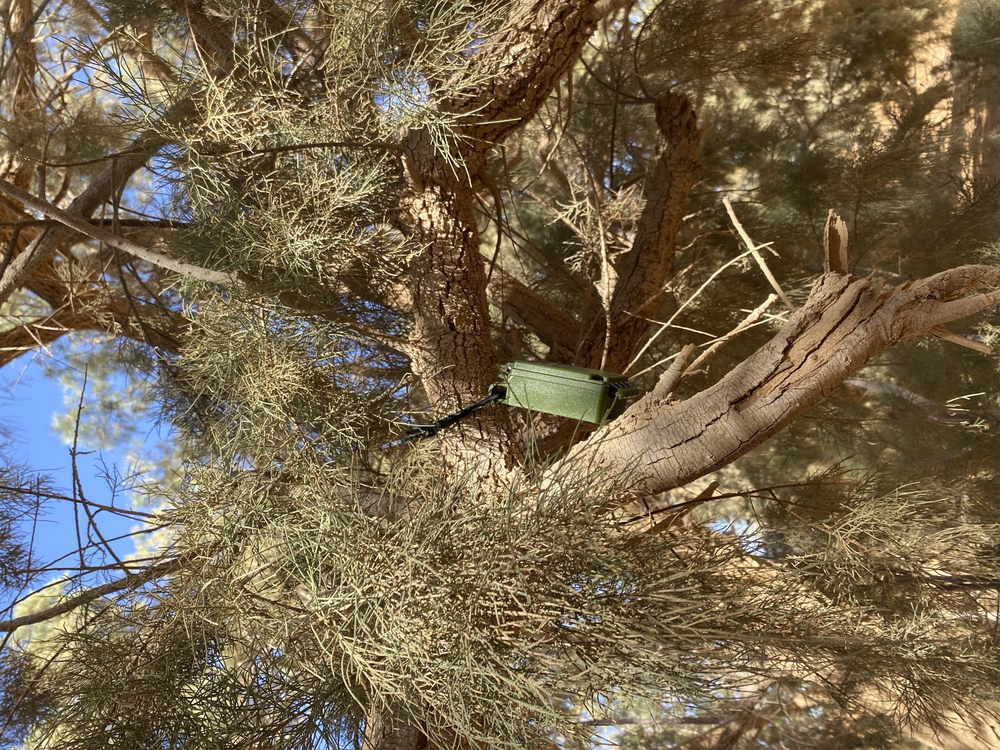
Weatherproof recorder housing.
Analysis pipeline
Step 01
Raw audio
17 hours of continuous recording.
Step 02
BirdNET analysis
Deep-learning species identification.
Step 03
Confidence filtering
Detections below a 0.5 threshold removed.
Step 04
Temporal clustering
Duplicate calls within 60 s collapsed.
Step 05
Manual validation
Expert review of identifications.
Result
Final dataset
1,210 detections, 29 species.
Top ten species by detection frequency
Bars are scaled against the Eurasian Collared-Dove at 511 detections. These ten species account for 1,150 of the 1,210 total detections; the remaining 19 species contribute 60 between them.
Eurasian Collared-Dove511
Eastern Olivaceous Warbler232
Eurasian Scops-Owl159
European Bee-eater78
Brown-necked Raven76
Common Redstart34
House / Spanish Sparrow22
Spotted Flycatcher17
Little Owl13
Green Sandpiper8
#
Species
Common name
Detections
Confidence
1
Streptopelia decaocto
Eurasian Collared-Dove
511
0.807
2
Iduna pallida
Eastern Olivaceous Warbler
232
0.698
3
Otus scops
Eurasian Scops-Owl
159
0.829
4
Merops apiaster
European Bee-eater
78
0.861
5
Corvus ruficollis
Brown-necked Raven
76
0.748
6
Phoenicurus phoenicurus
Common Redstart
34
0.739
7
Passer sp.
House / Spanish Sparrow
22
0.596
8
Muscicapa striata
Spotted Flycatcher
17
0.779
9
Athene noctua
Little Owl
13
0.633
10
Tringa ochropus
Green Sandpiper
8
0.894
The sand dunes
Beyond the oasis, dune fields stretch toward the Grand Erg Oriental — vast sand seas where wind, not water, shapes the terrain. Yet even here, life persists.
Nocturnal arthropod surveys using UV light traps revealed unexpected diversity: weevils, hawk moths, mantids, and longhorn beetles. These are not incidental species — they form the trophic foundation that sustains insectivorous birds, bats, and reptiles.
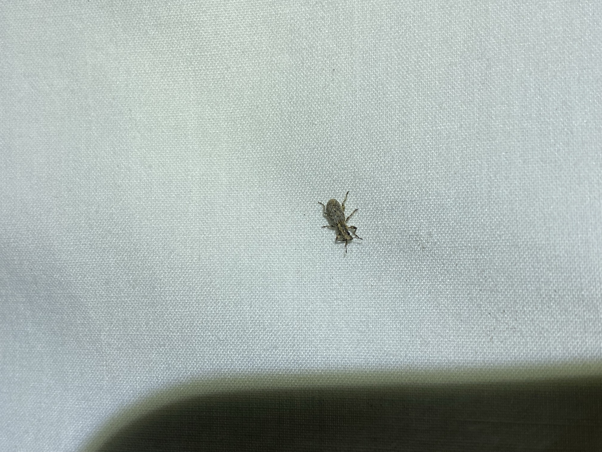
Curculionidae attracted to the UV trap.
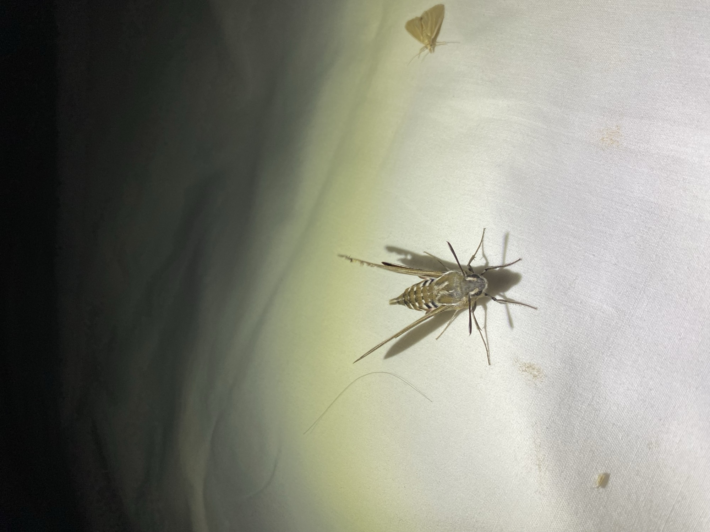
Sphingidae — nocturnal pollinators.
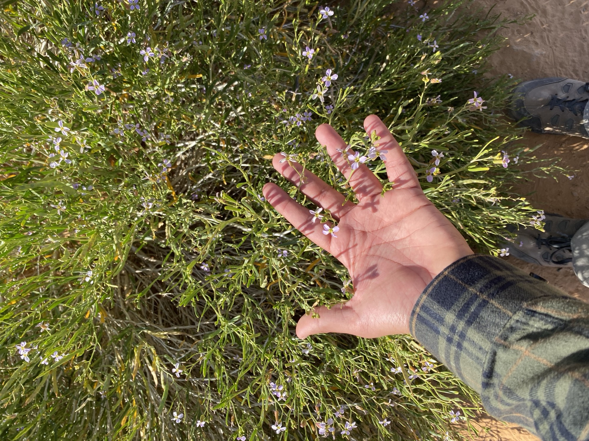
Ephemeral flowering shrub.
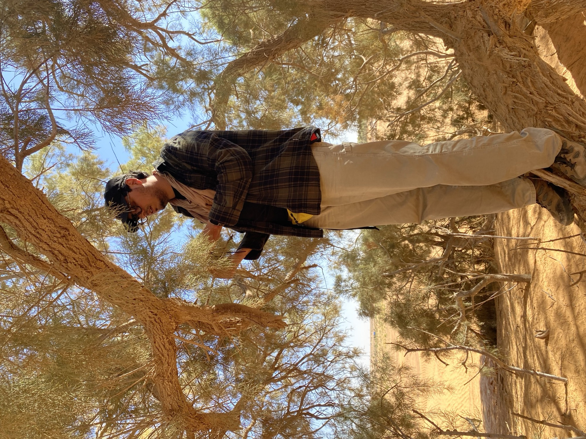
Nocturnal beetle at the light source.
The community
No research happens in isolation. At Qsar Ghilen, Am Ali — a local guide with decades of desert experience — became collaborator, translator, and interpreter of landscape patterns we might otherwise have missed.
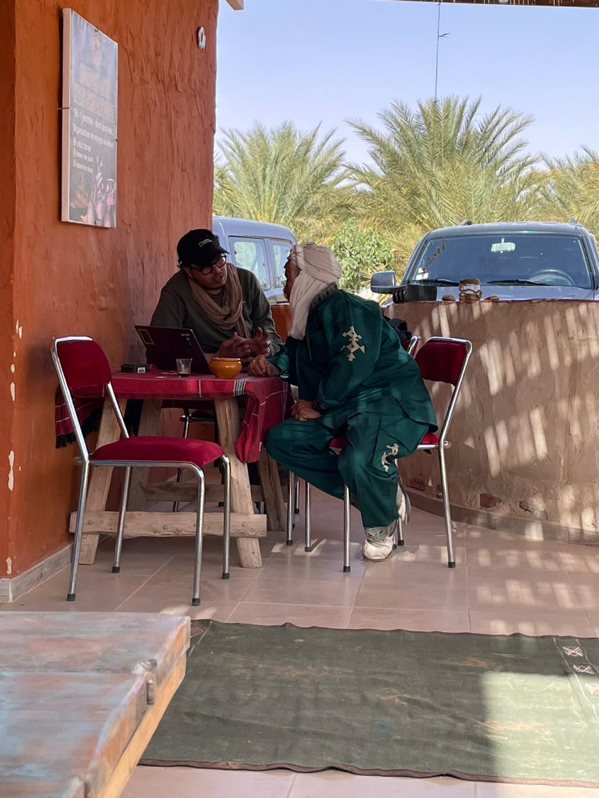
With Am Ali, who provided essential traditional ecological knowledge.
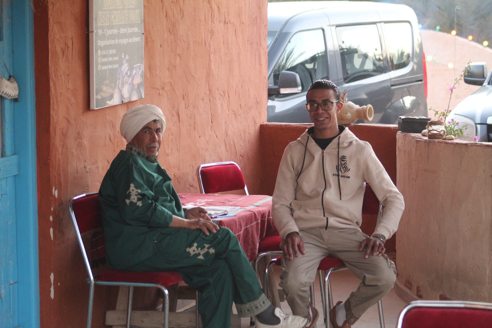
Am Ali at the oasis.
Traditional ecological knowledge operates on different timescales than acoustic surveys. Where our recorders captured 17 hours, Am Ali carried knowledge of seasonal rhythms, historical abundances, and behavioural patterns accumulated over a lifetime of observation.
Community engagement isn't just ethical practice — it's methodological necessity. Research conducted without local knowledge risks misinterpreting patterns, overlooking context, and producing conclusions disconnected from lived reality.
The archaeology
The Roman ruins at Qsar Ghilen tell a story of continuity. For millennia, this oasis has functioned as a node where water enables persistence.
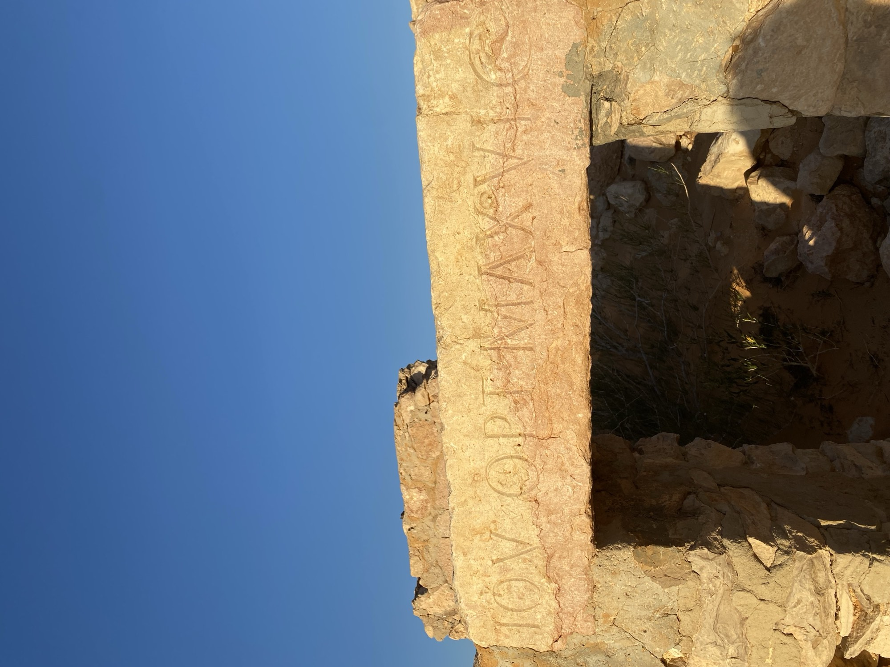
Latin inscription on ancient stone.
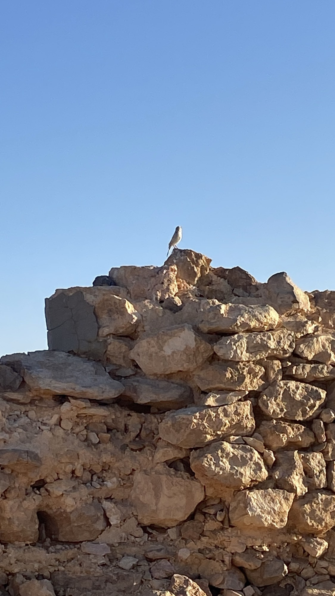
Desert Sparrow perched on a Roman wall.
Chapter 05
The Return Journey
Douz: gateway to the Sahara
The last major settlement before the Grand Erg Oriental, where services and human infrastructure give way to sand. The road carries multiple narratives — for decades it served as a Rally Dakar route.
Chott El Fejej: seasonal wetlands
A seasonal salt lake that fills with water in wet years, creating temporary wetland habitat critical for migratory waterfowl — and, increasingly, a site where recreational vehicle traffic poses a conservation challenge.
Bouhedma National Park
Formal protection for steppe ecosystems supporting reintroduced populations of dorcas gazelle, addax, and oryx.
Four findings
High resident population
48% of detected species are confirmed breeding residents, indicating that Qsar Ghilen supports year-round populations, not just transient visitors.
Migratory stopover site
Trans-Saharan migrants — warblers, bee-eaters, redstarts — were abundant, confirming the oasis as critical for birds crossing the Sahara.
Nocturnal community
Four nocturnal species were captured — owls and nightjars — that would be entirely missed by traditional diurnal surveys.
Conservation priority
A small oasis area supports biodiversity orders of magnitude higher than the vast surrounding desert, meriting elevated protection.
What the Desert Says
The desert speaks — if we bother to listen.
Over two days and 1,000 kilometres, we moved through landscapes often dismissed as barren. Yet our recorders documented 29 species and 1,210 detections — an acoustic signature that refutes the “empty desert” narrative.
What matters more than the species count is the recognition that biodiversity persists in systems actively shaped by human pressure — agriculture, recreation, infrastructure, climate change. Oases like Qsar Ghilen exist at the intersection of ecological and social systems.
The desert speaks. What we do with what it says remains an open question.